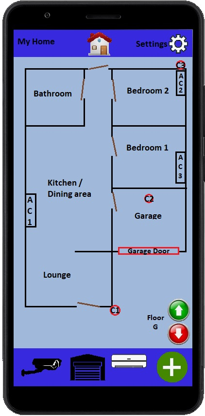

Overview
- My project idea involves taking multiple existing tools and combining them into an all-in-one application. Specifically, home automation and security systems. Similar applications already exist but are not always suitable for all scenarios.
I wish to create a single app that can be configured to work with all Wi-Fi capable home appliances, regardless of brand or proprietary home software compatibility. I do not see any reason this cannot be achieved as most of these appliances i.e., home video doorbells only require basic network and port forwarding knowledge to set up for use remotely. There is also a lot of third-party applications available which is in many cases open source.
Motivation
It is no doubt that technology has had a positive effect on all our lives, never have humans had the level of convenience provided by our advancements. A particular aspect of this that I have a keen interest in is automation. I have worked previously for an industrial automation company, gathering electrical components for electricians to assemble, while I would assemble electric gearboxes and motors, which prompted me to want start automating aspects of our home. The issue I have found is that there are many different platforms in use for this purpose. For example, I have a few of the power point boxes that allow you to switch the power on and off remotely. They have their own software to download and operate. My solar inverter has its own app, as does the aircon, the robot vacuum cleaner, and so on. The convenience of remote usage is made less convenient by the library of apps required to run everything.
Description
As stated in the overview. I wish to create an app capable of being able to cater for all appliances in the home. I am aware that this is possible using purpose-built home setups e.g., Google Home – Which is a great way of simplifying things, unfortunately if the appliance itself is not compatible with home, it will not be able to connect to it. In my case, none of my equipment is google compatible, and it would be far too costly to replace or upgrade everything! This is where the app comes in as I am sure that many others are faced with the same cumbersome library of apps to fumble through whilst away from home (or the office).
Ideally, within the app, remote access would be possible for:
- Air conditioning systems
- Lighting
- Blinds / Roller shutters
- CCTV Systems
- Ad hoc Wi-Fi power points
- Solar power inverters
- Robot Vacuum cleaner (I named mine Sam. Sam Sung. 😊 )
All of these software applications are owned by separate companies, so the app would have to be developed from scratch in order to avoid copyright infringement.
I would also like to implement a visual element to the app, where the user could draw a 2d top-down view of their home or office for a visual representation of their devices.
Once installed, the user would conduct scans for each of their devices, save devices found, then create their “home” using simple line draw tools, drop icons representing the devices onto the newly created map and name the icons for easy identification. Below I have created an initial impression of what I believe the graphic user interface should look like.

This is a basic example. The user can map out their plan, and tie elements within the map to the relevant appliance. They then have the option to use the map itself or the bottom bar, which is populated with icons representing the appliance. For example, pressing on C1 (camera 1, near the front of the home) would open a windowed stream of that camera stream. The garage door icon on the bottom bar will open and close to reflect its current position, and the entity on the map will turn from red to green when in the open position to reflect this.
For multi-level homes the up and down arrows in the bottom right corner will allow the user to create maps to accommodate this. For larger designs the map will allow edge scrolling. A library of prefab household items (furniture, whitegoods) would be added in later versions to make the map more aesthetically appealing, with the ability to add user created content.
The initial set up process would be somewhat time consuming upon first running the application, I would in time like to try and streamline this by perhaps being able to create a setup wizard within the app itself, however this would probably come as a later upgrade, with getting the project off the ground in an early state the main priority, with the next version to be implemented as soon as the app is stable.
Tools and Technologies
The skills required to create this app would include Java, Android studio, and Microsoft Visual Studio. Hardware requirements are not too high, and I believe any reasonably modern (within 4-7 years depending on spec) system should be more than capable of handling the processing work required for this task. Having a decent graphics card would speed up the post processing work but is by no means necessary in the case of this application.
A lot of the backbone of this project can be acquired through open-source apps (refer to author of each specific app) or through online resources such as https://source.android.com/ or simply searching for “open-source apps” on Google for a refined list.
Skills Required
An understanding of the various network protocols (TCP/IP, DNS, HTTP) as well as sound knowledge regarding Port Forwarding and router configuration would be essential.
My knowledge of networking is of a moderate level, I would like to broaden my skills in this area in the future. I have no previous experience using Java and would also need to research how to use it, or more ideally complete a formal course on the basics of Java to start. I am confident that my home PC should be more than powerful enough to handle the work, and to my knowledge no other special hardware is required
Outcome
Once complete. Home automation would be a lot simpler to set up, having only one app instead of having to switch between multiple, making the process much simpler and enjoyable. By integrating into one easy to understand program, I believe more people would use their devices more often simply due to a much more streamlined method of accessing everything at once. And the more appliances a user has, the more useful this software becomes.
I hope that this project will ultimately help others simplify their automated lives, and mine too.
In the words of Oscar Goldman “we have the technology.”